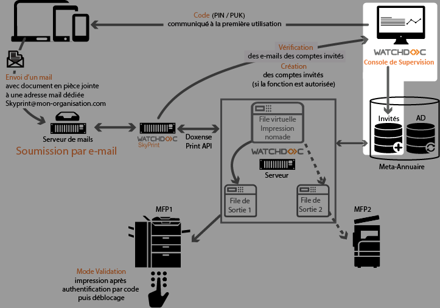
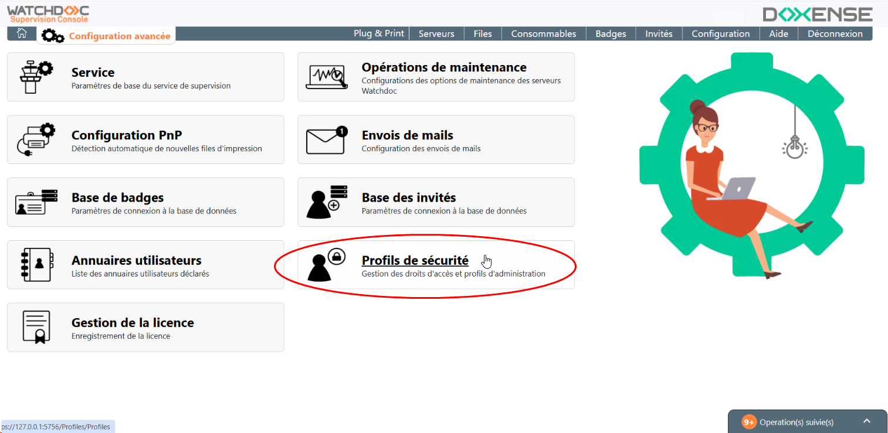
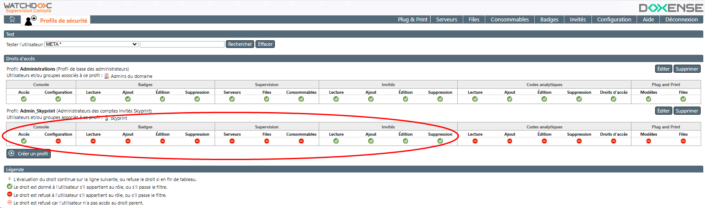
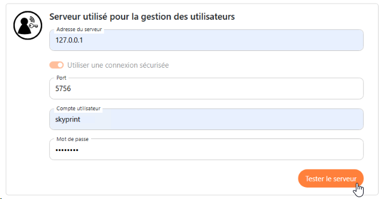
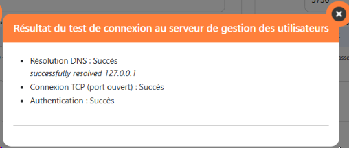

Présentation
Les utilisateurs autorisés à envoyer des demandes d'impression via Skyprint sont gérés dans la base Invités de la Console de Supervision (WSC).Vous devez donc configurer la connexion entre le serveur Skyprint et le serveur WSC chargé de gérer les utilisateurs.
Dans cette interface, vous configurez les paramètres du serveur chargé de gérer les utilisateurs de Skyprint.
Ces utilisateurs sont gérés dans la base Invités de WSC. Vous devez au préalable créer dans WSC un utilisateur doté d'un rôle d'administration de cette base Invités.

Prérequis
Cette configuration requiert un compte utilisateur (login/mot de passe) appartenant à un profil de sécurité autorisé à lire, ajouter, éditer et supprimer des comptes dans la base Invités de WSC.
Il est donc nécessaire de configurer ce droit d'accès au préalable dans WSC.
Procédure
Créer et configurer le rôle d'administration Skyprint dans WSC
-
Accédez à l'interface d'administration de WSC;
-
depuis le Menu Principal, cliquez sur Configuration avancée, puis sur Profils de sécurité :

-
dans la liste des profils de sécurité, cliquez sur Créer un profil ;
-
dans l'interface Création d'un profil, complétez les champs :
-
Nom : saisissez le nom attribué au profil chargé de gérer les utilisateurs Skyprint (Admin_Skyprint dans notre exemple) ;
-
Description : précisez la nature du groupe créé (Administrateurs des comptes invités Skyprint, par exemple) ;
-
Droits : dans la liste des droits, indiquez ceux qui sont attribués à ce profil : ce profil doit disposer au moins des droits suivants :
-
Console : Configuration
-
Invités : Lecture, Ajout, Edition et Suppression ;
-
-
Groupes des utilisateurs (ou utilisateur) : dans le champ, saisissez le nom d'un groupe d'utilisateurs ou d'un utilisateur spécifique (préfixé par @) inclus dans ce profil d'administration (compte unique @skyprint dans notre exemple).
-
-
Cliquez sur Valider pour confirmer la création du profil de sécurité.

-
déconnectez-vous puis reconnectez-vous dans WSC avec un compte appartenant au profil de sécurité que vous avez créé (compte skyprint, par exemple) ;
-
vérifiez que ce compte accède bien (au minimum) à l'interface de gestion des comptes invités :
-
Une fois cette vérification faite, configurez la connexion entre le serveur Skyprint et la Console de Supervision WSC.
{kind=link}
Configurer le serveur de gestion des utilisateurs dans Skyprint
Dans cette section, vous configurez l'accès au serveur WSC chargé de gérer les utilisateurs invités à utiliser Skyprint.
Ces utilisateurs sont gérés dans la base Invités de la Console de supervision WSC.
-
Accédez à l'interface de configuration de Skyprint.
-
Dans le menu, cliquez sur Configuration de Watchdoc.
-
Dans la section Serveur utilisé pour la gestion des utilisateurs, indiquez les paramètres d'accès à la Console de Supervision :
-
Adresse du serveur : saisissez (IP ou FQDN) du serveur sur lequel est hébergé WSC.
-
Utiliser une connexion sécurisée : activez le bouton si les accès au serveur Watchdoc sont sécurisés.
-
Port : saisissez le numéro du port d'accès sécurisé à WSC (5756 par défaut) ;
-
Compte : saisissez le nom du compte autorisé à gérer la base Invités de WSC (configuré à l'étape précédente) ;
-
Mot de passe : saisissez le mot de passe du compte autorisé à gérer la base Invités de WSC (configuré à l'étape précédente).
-
-
Une fois les données saisies dans les champs, cliquez sur le bouton Tester pour vérifier la connexion de Watchdoc SkyPrint avec le serveur WSC :

-
Une fois les données saisies, cliquez sur le bouton Tester pour vérifier la connexion de Watchdoc Skyprint avec le serveur d'impression Watchdoc :

-
Si le test n'est pas concluant, vérifiez les valeurs saisies et corrigez-les ou vérifiez l'état du serveur Watchdoc. Si le test est concluant, cliquez sur le bouton Sauvegarder pour enregistrer les paramètres.